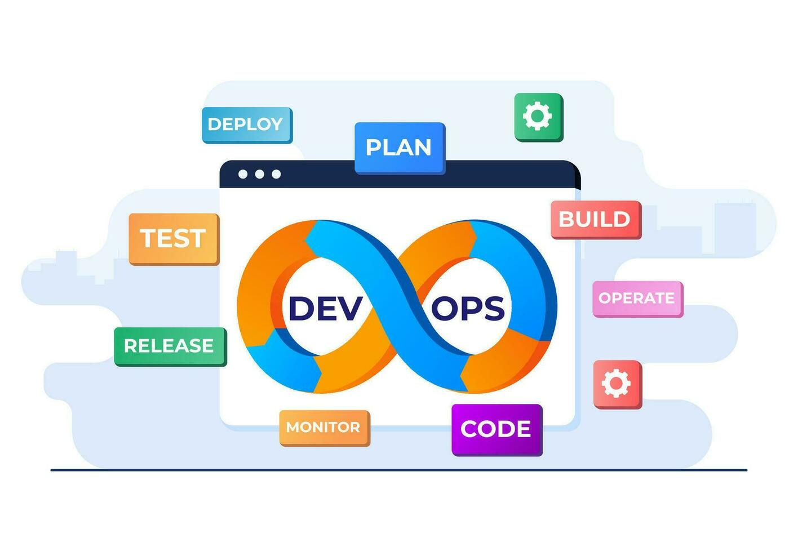
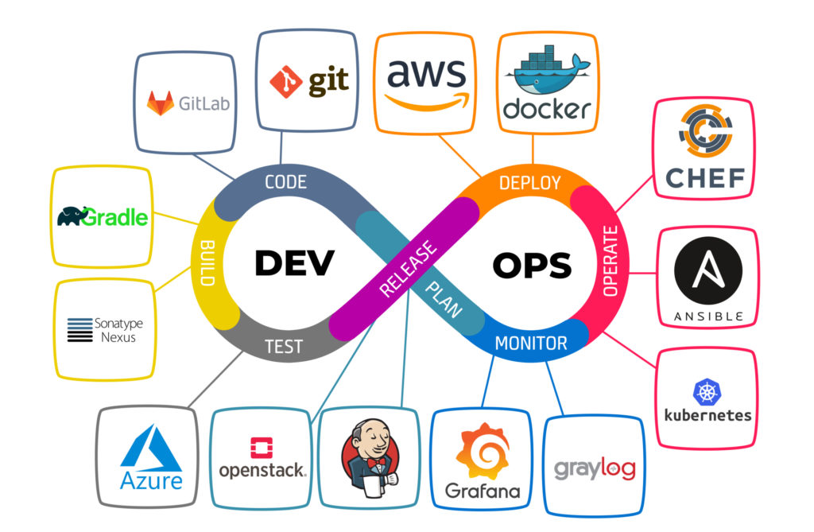

KATHERIN GISSELL FLOREZ GOMEZ
Cloud Infrastructure & Automation | Cloud Networking | CloudOps
PERFIL PROFESIONAL
Ingeniera Electrónica con 1+ años de experiencia técnica combinada en automatización de infraestructura de TI,
optimización de sistemas operativos y arquitectura de redes empresariales e industriales dentro de los sectores de
telecomunicaciones y manufactura a gran escala. Especializada en el diseño de scripts avanzados en Python para la ingesta,
validación y procesamiento automático de datos, y en el mapeo lógico y troubleshooting de más de 280 dispositivos conectados
en red en entornos de alta disponibilidad como Nestlé. Cuento con un dominio riguroso de la capa de red (Protocolos TCP/IP, VPN,
Firewalls y enrutamiento avanzado orientado a estándares Cisco CCNA). Profundizando activamente en prácticas DevOps/GitOps bajo el
ecosistema de Google Cloud Platform (GCP), incluyendo la lógica de orquestación de contenedores (Docker/Kubernetes) y la estructuración
de bases de datos relacionales (SQL/PostgreSQL), con el objetivo de aportar resiliencia, observabilidad y automatización continua a
equipos de arquitectura de software.
COMPETENCIAS TÉCNICAS
- Programación y Lógica de Código: Dominio fluido de Python (Cisco Python Essentials) para la automatización de procesos
lógicos, manipulación de archivos y optimización de flujos de operaciones de TI. Comprensión y lectura de código estructurado.
- Networking Avanzado & Seguridad: Sólida base de ingeniería en la gestión de redes corporativas (Modelos OSI/TCP/IP,
direccionamiento IPv4/IPv6, lógica de Firewalls, enrutamiento y conectividad VPN) bajo preparación estándar CCNA (2026).
- Observabilidad y Métricas: Creación de tableros de telemetría operativa y automatización de alertas lógicas tempranas utilizando suites integradas de datos.
- Nube y Contenedores: Estudio técnico de la arquitectura de Google Cloud Platform (GCP) y empaquetado de microservicios con Docker y Kubernetes.
- CI/CD & GitOps: Asimilación teórica de flujos de despliegue continuo (GitHub Actions, Git corporativo).
EXPERIENCIA LABORAL
Ingeniera de Automatización e Infraestructura (Joven Profesional)
Telefónica | Agosto 2025 – Presente
- Automatizar procesos de infraestructura y gestión de datos mediante el desarrollo de scripts en Python y PowerShell, estandarizando la ingesta y validación de archivos lógicos comprimidos en servidores corporativos.
- Optimizar la eficiencia operativa del entorno de TI, colaborando de forma continua dentro de células ágiles (Scrum) con equipos de desarrollo para la resolución de fallas lógicas de sistemas distribuidos.
- Implementar soluciones de monitoreo y observabilidad, configurando alertas automatizadas ante incidentes lógicos y estructurando tableros de control de métricas operativas.
- Garantizar la gobernanza de TI a través del control de versiones inicial (Git) y la documentación bajo metodologías de calidad internacional.
Ingeniera de Redes e Infraestructura (Pasantía Profesional)
Telefónica | Agosto 2024 – Diciembre 2024
- Diseñar y guiar el levantamiento topológico de la red, realizando el mapeo lógico, direccionamiento IP e interconexión de más de 280 dispositivos conectados, asegurando la alta disponibilidad y resiliencia del sistema.
- Ejecutar pruebas de troubleshooting y validación de protocolos de comunicación, garantizando el flujo seguro de datos bajo entornos de red industrial (PROFIBUS DP) y corporativa.
- Asegurar la continuidad operativa mediante la creación de manuales de contingencia técnica (runbooks) y documentación de arquitectura física y lógica bajo normas IEEE.
Coordinadora de Infraestructura de Red LAN
Telefónica | Marzo 2024 – Junio 2024
- Supervisar la instalación y mantenimiento de la infraestructura de red fija (LAN), gestionando el enrutamiento lógico, configuraciones DNS y la seguridad perimetral básica de los laboratorios de ingeniería.
EDUCACIÓN
HORARIO SEMANAL
| Jornada | Lunes | Martes | Miercoles | Jueves | Viernes | Sábado | Domingo |
|---|
| Mañana | Ordenar mi habitación | Hacer el desayuno | Asear la casa | Ordenar la cocina | Lavar mi ropa | Clases | Lavar mi baño |
| Tarde | Deporte | Deporte | Deporte | Deporte | Deporte | Deporte | |
| Noche | Clases | Clases | Clases | Clases | Clases | Ver videos | Ver pelicula |
FORMULARIO DE CONTACTO
IMAGENES


LINKS
Perfil de Linkedin